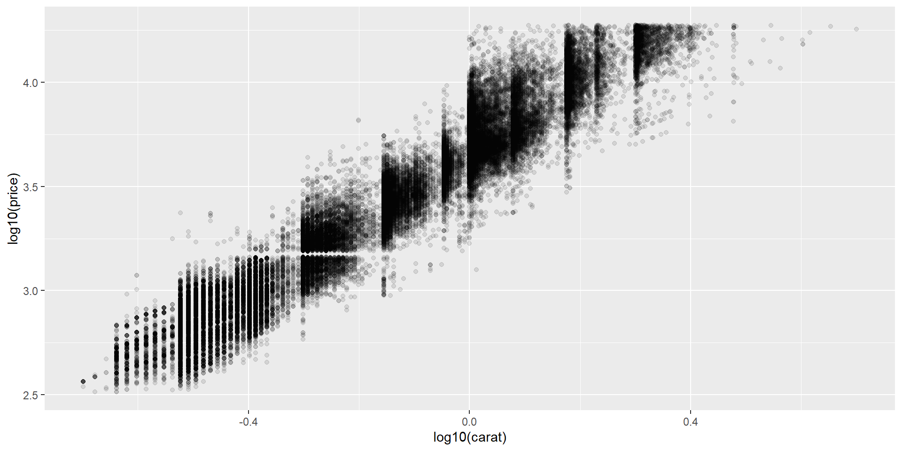
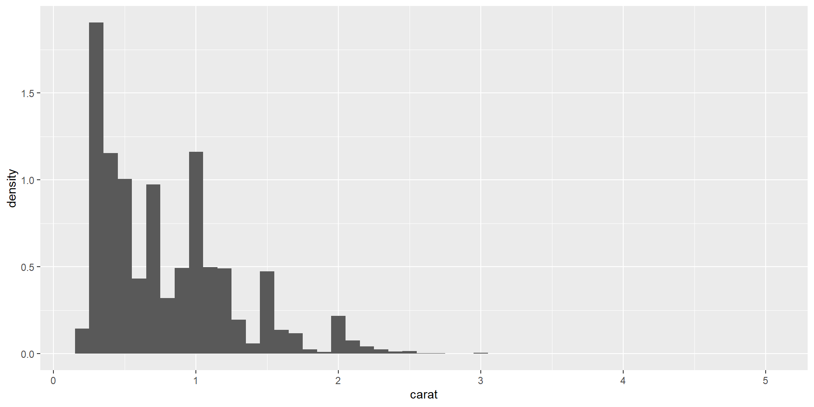

library(ggplot2)
# Mapping colour to a column (legend appears)
ggplot(mpg, aes(displ, hwy, colour = class)) + geom_point()
# Setting constant colour (no legend)
ggplot(mpg, aes(displ, hwy)) + geom_point(colour = "steelblue")
# Expression inside aes
ggplot(diamonds, aes(x = log10(carat), y = log10(price))) + geom_point(alpha = 0.1)
# After-stat for histogram density
ggplot(diamonds, aes(x = carat, y = after_stat(density))) + geom_histogram(binwidth = 0.1)